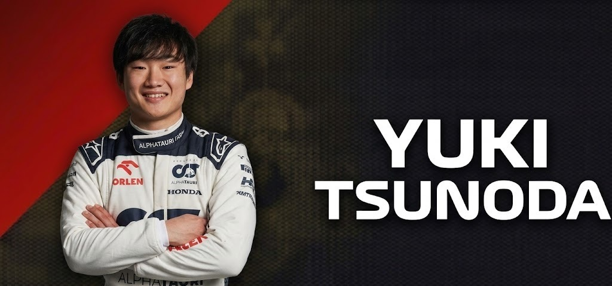

Yuki Tsunoda
DRIVER PRESENTATION

Yuki Tsunoda
Proyección Técnica y Evolución Adaptativa de Yuki Tsunoda en su Temporada de Debut
Yuki Tsunoda inició su ascenso meteórico en el automovilismo japonés (2016), respaldado por el programa de jóvenes pilotos de Honda y Red Bull. Su transición a Europa fue disruptiva, logrando resultados sobresalientes en F3 y F2 que le permitieron debutar en Fórmula 1 con AlphaTauri en 2021 a los 20 years. Durante su temporada de novato, Tsunoda exhibió destellos de una velocidad natural extraordinaria, especialmente en sectores de alta complejidad técnica, mientras atravesaba un proceso intensivo de adaptación a la gestión de sistemas híbridos y neumáticos. Su progresión a lo largo del año mostró una maduración táctica significativa y una mejora constante en la comunicación técnica con el muro de boxes. Tsunoda representa la nueva generación de talento japonés, enfocada en la precisión y el desarrollo de habilidades competitivas al más alto nivel internacional.
MOMENTOS DESTACADOS

Debut con Puntos
Bahréin 2021: Tsunoda impresiona en su primera carrera logrando puntuar y realizando adelantamientos agresivos.

Mejor Resultado: P4
Abu Dhabi 2021: Yuki cierra su temporada de novato con un espectacular cuarto puesto, rozando el podio.
El Rayo Japonés
2021: Su ascenso meteórico desde Japón a la F1 en tiempo récord, demostrando el apoyo total de Honda y Red Bull.